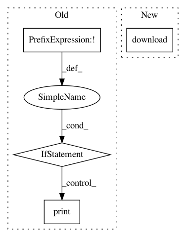

ec70118625aa40a8ce038784005b877d79e58359,examples/plot_visualize_bad_epochs.py,,,#,26
Before Change
base_path = os.path.join(
os.path.dirname(autoreject.__file__), "..", "examples")
target = os.path.join(base_path, "ds117_R0.1.1_sub016_raw.tgz")
if not os.path.exists(os.path.join(base_path, "ds117")):
if not os.path.exists(target):
fetch_file(src_url, target)
tf = tarfile.open(target)
print("Extracting files. This may take a while ...")
tf.extractall(path=base_path, members=tf.getmembers()[-25:-9:3])
os.remove(target)
// %%
// We will create epochs with data starting 200 ms before trigger onset
// and continuing up to 800 ms after that. The data contains visual stimuli for
// famous faces, unfamiliar faces, as well as scrambled faces.
tmin, tmax = -0.2, 0.8
events_id = {"famous/first": 5, "famous/immediate": 6, "famous/long": 7}
// %%
After Change
if not os.path.isdir(target_dir):
os.makedirs(target_dir)
openneuro.download(dataset=dataset, target_dir=target_dir,
include=[f"sub-{subject_id}/ses-meg/"])
// %%
// We will create epochs with data starting 200 ms before trigger onset
// and continuing up to 800 ms after that. The data contains visual stimuli for
In pattern: SUPERPATTERN
Frequency: 3
Non-data size: 4
Instances
Project Name: autoreject/autoreject
Commit Name: ec70118625aa40a8ce038784005b877d79e58359
Time: 2021-03-26
Author: aprockhill@mailbox.org
File Name: examples/plot_visualize_bad_epochs.py
Class Name:
Method Name:
Project Name: facebookresearch/ParlAI
Commit Name: d4e3b1c76360bcf72cbae541834f8cd38f5449ee
Time: 2019-03-21
Author: jju@fb.com
File Name: parlai/tasks/light_dialog/build.py
Class Name:
Method Name: build
Project Name: SeanNaren/deepspeech.pytorch
Commit Name: 598d2b54295bdb2b741b1bcf1f794eabbdf3200b
Time: 2017-04-23
Author: seannaren@hotmail.com
File Name: data/ted.py
Class Name:
Method Name: main